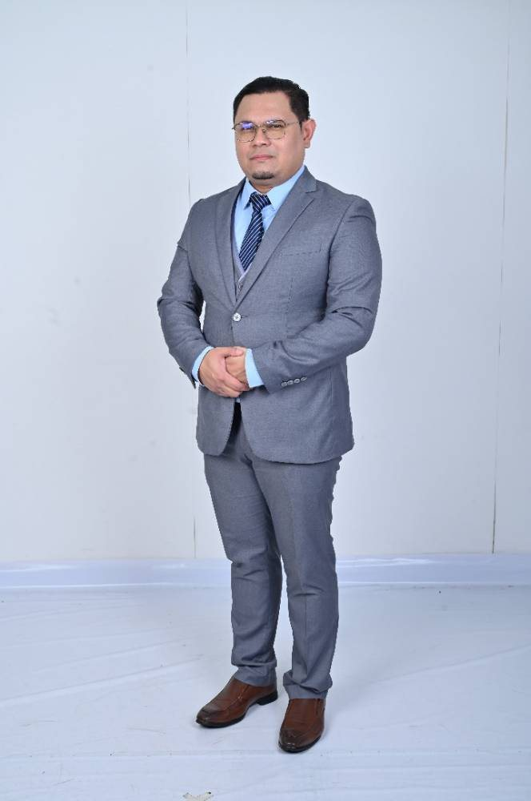
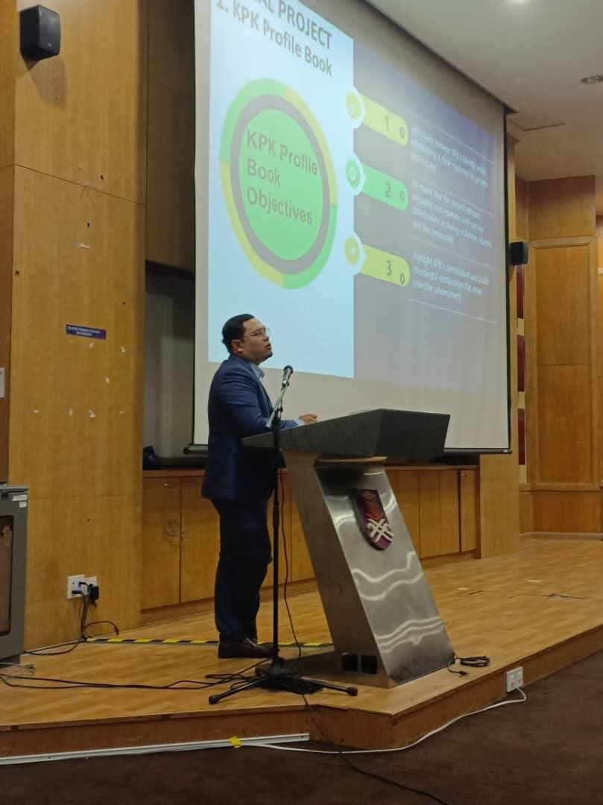
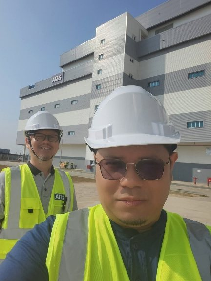

Biomass & waste to fuel
Combustion, co-firing and torrefaction of palm and rice residues with Malaysian coal, gasification for hydrogen, and waste-to-energy. Includes his most-cited paper in Bioresource Technology (426 Scopus citations).
Associate Professor · Ir. Dr.
P.Eng. (BEM) · PhD (Melbourne)
Dean, Faculty of Chemical Engineering
Universiti Teknologi MARA, Shah Alam
Chemical engineer at UiTM since 2004. He studies how palm, rice and coconut residues can be made into fuels and adsorbents, and how major-hazard plants can be run safely.

Figures as of 25 September 2026.
The fourth theme feeds directly into 81 CIMAH consultancy projects.
Combustion, co-firing and torrefaction of palm and rice residues with Malaysian coal, gasification for hydrogen, and waste-to-energy. Includes his most-cited paper in Bioresource Technology (426 Scopus citations).
Biochar, activated carbon and xerogel adsorbents from coconut shell, palm kernel shell and empty fruit bunch that capture SO₂, H₂S, CO₂ and volatile organic compounds, including gas-mask filters designed for Malaysia's climate.
Cellulose and bamboo hydrogels, aerogels and biochar electrodes for flexible supercapacitors, with a Q1 review in Renewable & Sustainable Energy Reviews (2025) and an international AI-assisted materials grant (2026).
Vapour cloud explosion and fire modelling, dynamic risk assessment and CIMAH compliance, feeding directly into 81 CIMAH consultancy projects and industry training.
Leads a faculty of five campuses and around 190 academics. In 2025 the faculty won UiTM's 6-Star Responsibility Centre award and the Consistent Excellence Award (Gold).
Principal Investigator of an international grant on biochar supercapacitors optimised with AI and machine learning.
INPRES was named Best Research Group at the College of Engineering, and he won the overall Most Publications Award.
Waste-to-energy should be a central pillar of Malaysia's waste and energy strategy.
Paraphrased from Free Malaysia Today, 13 May 2026


Prospective MSc and PhD students, industry partners and international collaborators are welcome to write.